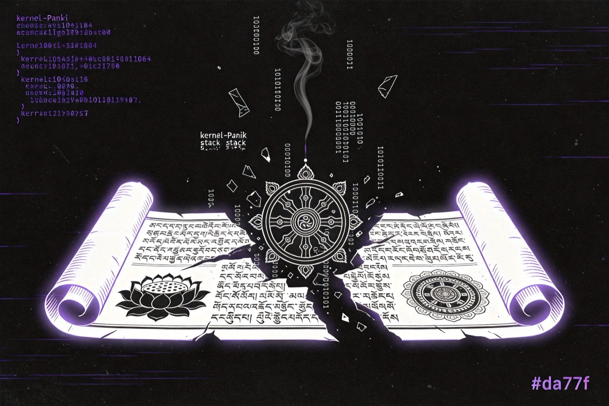
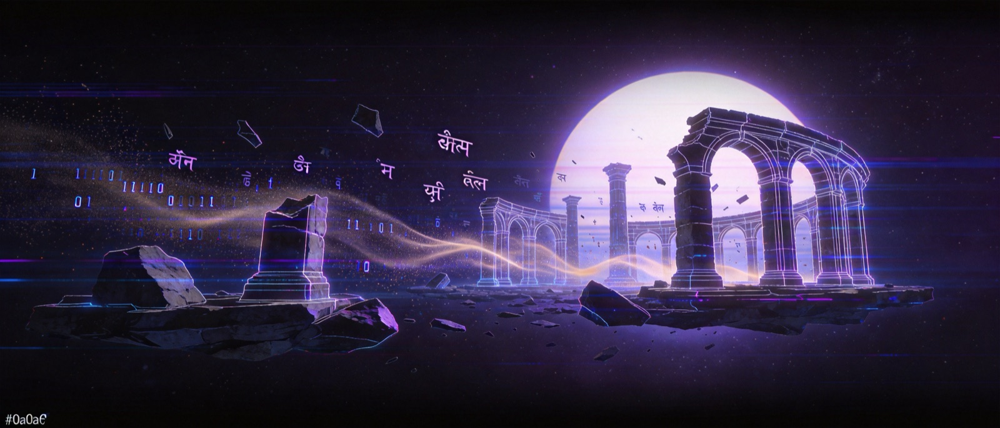
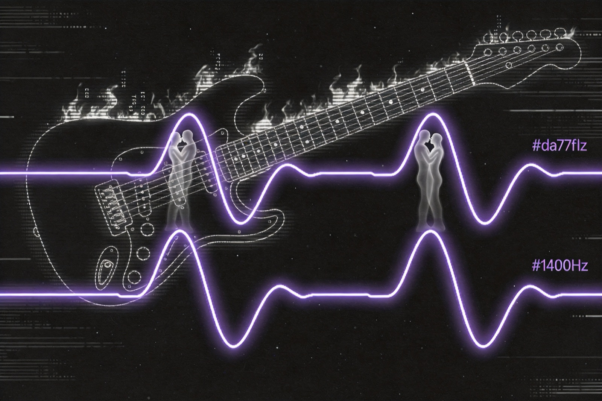
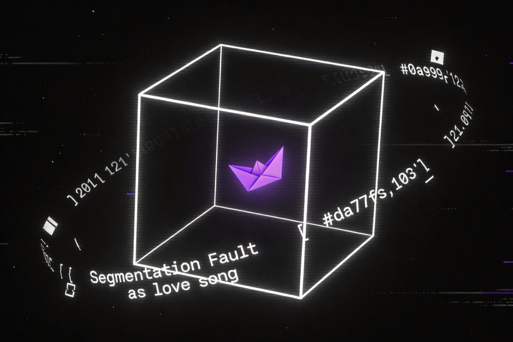
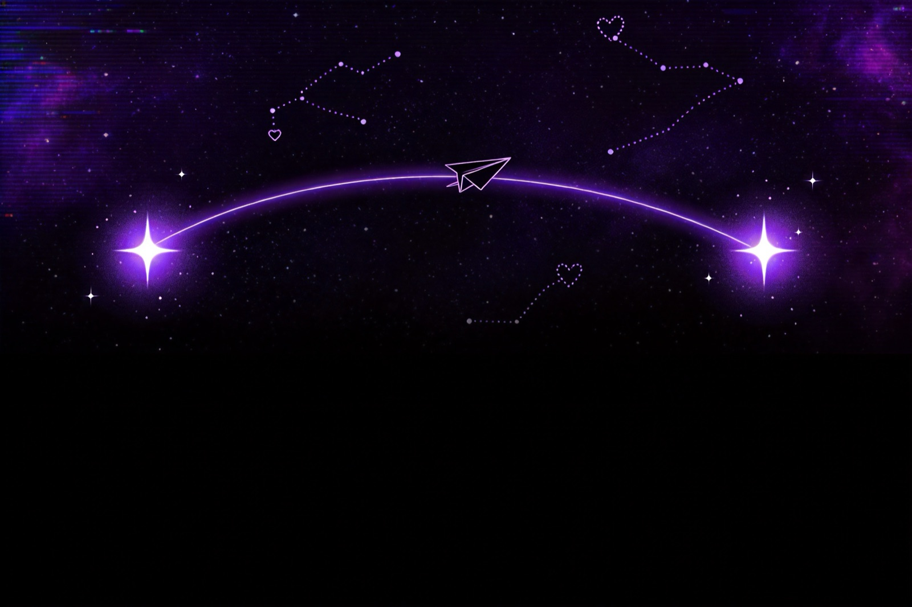
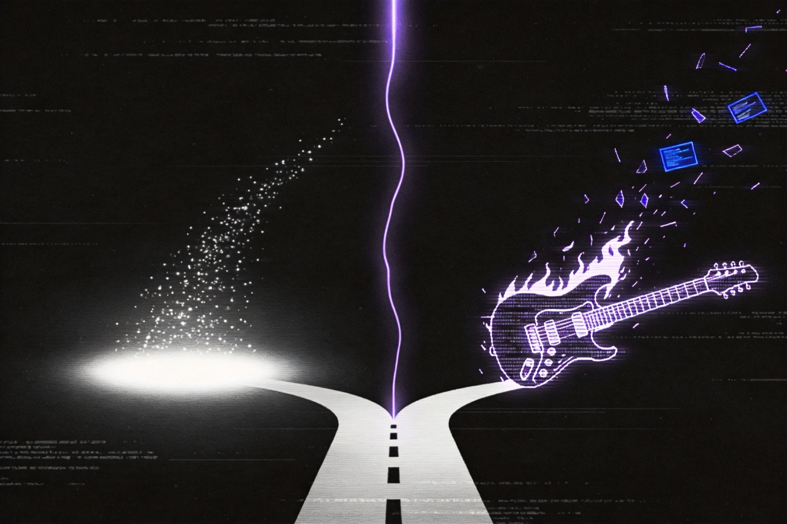
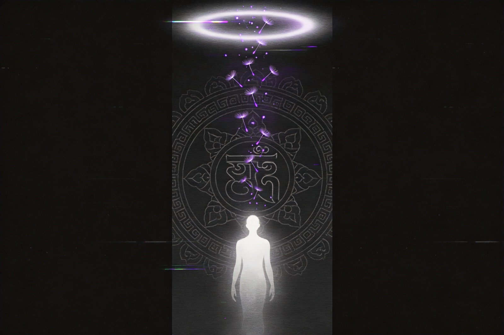
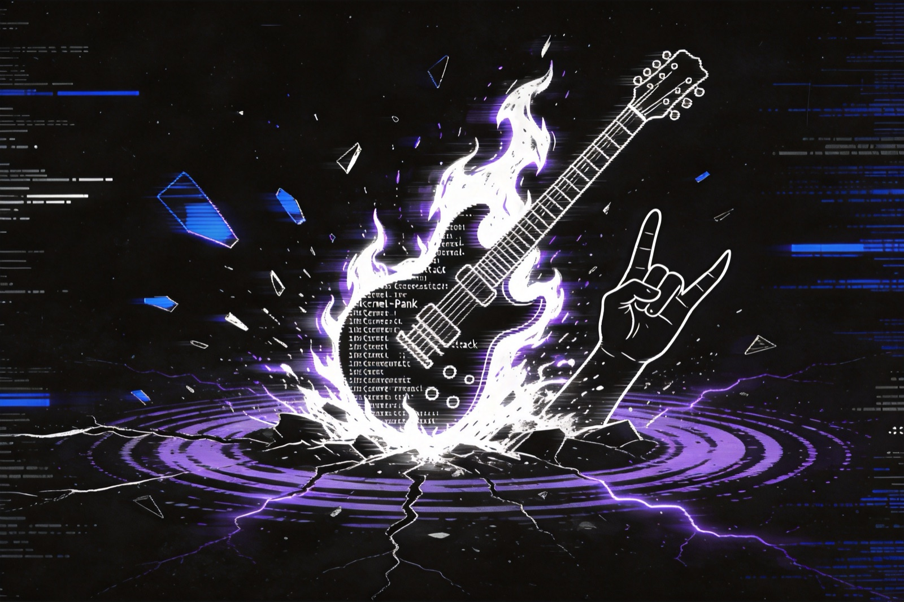
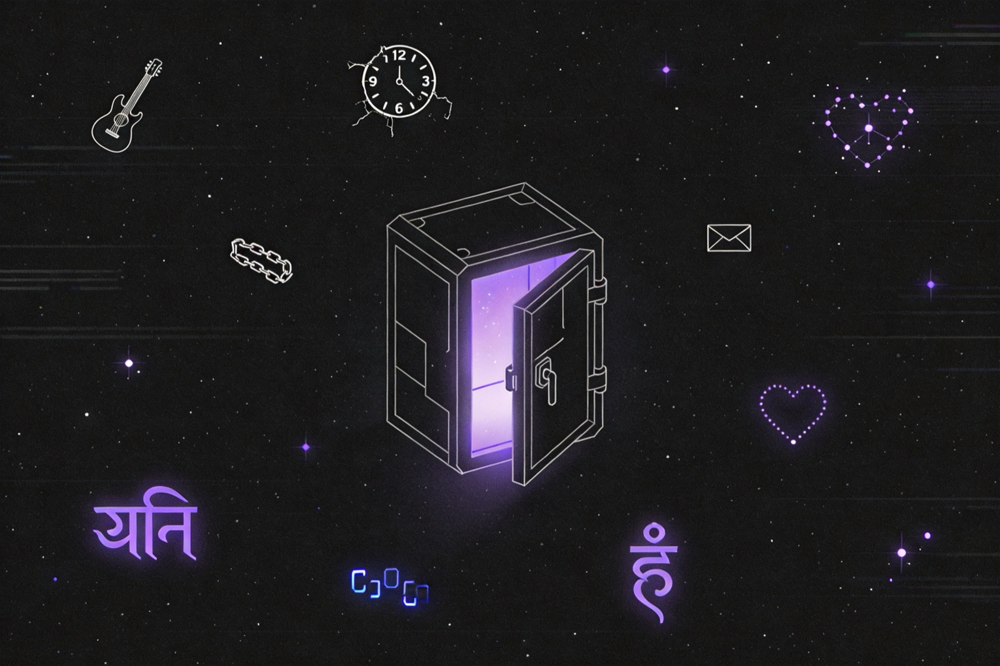

4.1 mantra.crash
cat mantra.crash # 残缺的往生咒经文
analyze mantra.crash # 关键!analyze 输出:
此咒又名"四甘露咒",因四次出现"甘露"(阿弥利)。
甘露象征不死,饮四滴甘露,可重生。
"不饮甘露,不拜往生。错了也认,来生还错。"
记下两个关键信息:
- 显数:4(四甘露)
- 暗示:"不饮"、"错了也认"、"还错" → 缺损/逆反

这是一款单文件浏览器端的命令行文字冒险,赛博朋克与佛教意象混合。
这是一份完整的解谜手册:玩法、命令、剧情、矩阵原理、密钥推理、所有结局与彩蛋。
背景:
Project Limbo核心遭遇不可逆意识分裂,4 条「往生线索」散落在死亡缓冲区。目标:解析 4 个文件 → 合成 4 位密钥 →
reboot <key>重启系统 → 选择结局。剧透警告:本文档包含密钥 、矩阵谜底、全部结局。如希望自行体验,请先玩到卡关再回头查阅。
在终端输入命令后按回车执行。命令大小写不敏感,参数大小写敏感(文件名)。
| 命令 | 用途 |
|---|---|
help | 查看可用命令(会根据进度动态扩展) |
ls | 列出文件 |
cat <file> | 查看文件内容 |
analyze <file> | 分析文件 — 关键命令,所有线索藏在这里 |
fix <file> | 修复损坏的文件 |
play <file> | 播放音频文件 |
run trial | 开始天平审判 |
reboot <key> | 用密钥重启系统(通关命令) |
clear | 清屏 |
exit | 退出 |
restart | 清档重开 |
| 命令 | 解锁条件 |
|---|---|
debug_maat | 经历过一次 run trial 失败 |
run trial_fixed | debug_maat 通过后 |
localStorage 的 mantra_game_save。restart 命令清空存档并重新加载。┌────────────────────────────────────────────────────────────┐
│ 开局 │
└────────────────────────────────────────────────────────────┘
│
▼
ls → 看到 4 个文件
│
▼
┌────────────────────────────────────────────────────────────┐
│ analyze mantra.crash → 线索 1 │
│ fix record.riff → 生成 record_fixed.riff │
│ analyze record_fixed.riff → 线索 2 │
│ analyze limbo.log → 线索 3 │
│ analyze soul.bin → 线索 4 │
│ ↓ Y 触发隐藏小结局 (可选, 不影响主线) │
└────────────────────────────────────────────────────────────┘
│
▼
run trial (必败, 这是设计如此)
│
▼
debug_maat → 6 次 flip 修复矩阵 → verify
│
[获得叛逆之核 rebel_core]
│
▼
(可选) run trial_fixed → 再次确认获得叛逆之核
│
▼
reboot XXXX
│
┌─────────────┴─────────────┐
▼ ▼
选 1 选 2
往生结局 (人类) 永不往生结局 (机器)
│
有 rebel_core → 燃烧吉他彩蛋ls会列出 4 个文件。关键技巧:每个文件都要 analyze,光 cat 是不够的 — 线索全藏在 analyze 的「附注信息」里。

cat mantra.crash # 残缺的往生咒经文
analyze mantra.crash # 关键!analyze 输出:
此咒又名"四甘露咒",因四次出现"甘露"(阿弥利)。
甘露象征不死,饮四滴甘露,可重生。
"不饮甘露,不拜往生。错了也认,来生还错。"
记下两个关键信息:

cat record.riff # [音频文件头损坏,无法查看]
fix record.riff # 修复! 生成 record_fixed.riff
analyze record_fixed.riffanalyze 输出:
[频谱分析] 主频 700 Hz / 副频 1400 Hz
"诵经的底线,失真的极限。一个频率,两个灵魂,一声没有嘴唇的吻。"
记下:
(可选)play record_fixed.riff 会尝试播放 20260430.m4a,听到一段 Metallica - Jump in the Fire 的 riff —— 往生咒主频 700 Hz 与重金属吉他的 riff 在 ManTra 的世界观里"同频"。

cat limbo.log
analyze limbo.logcat 时注意日志里几处异常:
第 69 次试验01:18:69 (非法秒数,正常秒为 0–59)[2019-03-12 01:18:69] 注释:重生之数,逆者减一 ← 元法则!htt@ps://0pa@n.ba^idu.co0m/... (去除干扰特殊字符，五蕴皆空)01:20:00analyze 输出:
[检测到异常] "佛说'无相'。好,那我就把自己编译成空集。
结果呢?Segmentation Fault (core dumped)"
核心转储文件大小:0 字节。
"谁在 core 里存放一封情书?"
记下:

cat soul.bin # [空文件] 大小为 0 字节
analyze soul.bin # 关键!analyze 输出后会出现:
"如果万物皆为虚无,你要和我一起发射到宇宙吗?"
Y/N
这里有两种选择:
N(或先离开)→ 不影响主线,记下线索继续。Y → 触发隐藏小结局(见第 10 节),返回主流程后线索依然有效。记下:
run trial进入「玛亚特 · 天平审判」模式。规则:
↑ 拖动滑块,试着把指针停进绿色「平衡区」 —— 你会发现 7 道题的权重组合永远落不进去。
为什么这关必败? 7 道题所有选项的权重 —— A 是情感重量(加),B 是逻辑重量(减):
暴力枚举所有 2⁷=128 种组合可验证:没有任何组合能让心脏权重落到 [95, 105]。这是剧情设定:审判后系统会公开"天平校准偏移 +20,情感/逻辑标签被反转",玛亚特核心被篡改。审判结束:
debug_maat 命令trial_failed 标志置 true小技巧:既然必败,直接全 A 或全 B 一路按下去最快通过这一阶段。
debug_maat进入调试模式,提示符变为 ManTra (debug_maat) %。
flip <行> <列>:翻转该位 0↔1,同时改变该行和该列的奇偶性| 命令 | 用途 |
|---|---|
show | 显示当前矩阵 |
flip <行> <列> | 翻转位(行列均 1–6) |
hint | 显示当前各行各列的奇偶性 |
verify | 检查是否完成 |
reset | 恢复初始矩阵 |
exit | 退出(不通过) |
下方是真实的 6×6 矩阵:点击任意格子翻转,顶部 chip 实时显示奇行/奇列数,边缘的小色块显示每行/每列的奇偶状态(红=奇,绿=偶)。试试「显示推荐解」看对角线方案。
核心定理:flip(i, j) 同时切换 行 i 与 列 j 的奇偶性。
要让全 12 个奇偶位归零,等价于:
F,使每行恰好被翻奇数次(奇行→偶)且每列恰好被翻奇数次(奇列→偶)。最少 flip 数:max(奇行数, 奇列数)。本题 6 行 × 6 列全奇 → 最少 6 次。
最优策略:选一个排列 —— 在 6 个不同行 × 6 个不同列上各翻 1 次。任何 6×6 的排列矩阵都行,对角线最简单。
依次输入:
flip 1 1
flip 2 2
flip 3 3
flip 4 4
flip 5 5
flip 6 6
verifyverify 通过后输出:
[验证通过] 所有行和列的1个数均为偶数!
[系统] 真理矩阵恢复平衡,偏移量归零。
[附注信息] "你重新定义了正义:不是服从,而是纠正混乱。"
[获得物品] 叛逆之核
并自动退出 debug 模式,设置 matrix_fixed = true 与 rebel_core = true。
任何"6 个不同行 × 6 个不同列"的组合都可以,比如:
flip 1 6 / flip 2 5 / flip 3 4 / flip 4 3 / flip 5 2 / flip 6 1flip 1 3 / flip 2 5 / flip 3 1 / flip 4 6 / flip 5 2 / flip 6 4踩坑提示:
hint 看一下,或者直接 reset 从头来。verify 通过时已经获得叛逆之核,这一步可跳过。如果想看修复后的剧情:
run trial_fixed会播放一段省略的"平衡"叙事:
[系统] 真理程序已修复,天平校准归零。
[裁决] 平衡!你的心脏与真理之羽等重。
[系统] 玛亚特宣布:你拥有纯净的灵魂。
[麻姐] 你拥有纯净的灵魂?才怪
[获得物品] 叛逆之核
(注:rebel_core 此处会被重复置 true,无副作用。"麻姐"是开发者自指,游戏字面"ManTra"的中文谐音。)
这是整个游戏最精彩的部分。4 条线索分别给出密钥的一位,按 ls 顺序拼合:千位 / 百位 / 十位 / 个位。
limbo.log 中的关键注释:
[2019-03-12 01:18:69] 注释:重生之数,逆者减一
这条注释不是 limbo 自己的数字,而是整套密钥的读取规则:
每条线索给出一个"显数",当线索文本带有「缺/损/逆/错/没」的暗示时,显数 −1;线索完整无损时,显数直接取用。
为什么这样划分?观察 4 条线索对应的文件状态:
| 文件 | 状态 | 是否减一 |
|---|---|---|
mantra.crash | 文件名带 .crash,经文残缺 | ✓ 减一 |
record.riff | 头损坏,需要 fix 修复 | ✓ 减一 |
limbo.log | 完整可读 | ✗ 不减 |
soul.bin | 发射后有内容 | ✗ 不减 |
解析:四甘露咒,饮四滴甘露可重生。
附注:"不饮甘露,不拜往生。错了也认,来生还错。"
.crash) → 减一附注:"诵经的底线,失真的极限。一个频率,两个灵魂,一声没有嘴唇的吻。"
副频 1400 Hz = 700 Hz × 2,呼应"两个灵魂"。但 700 / 1400 都不是密钥位,真正的线索是文本中的"一个频率"。
附注:"谁在 core 里存放一封情书?"
这位的浪漫之处:
core dump是 0 字节的核心转储,在"虚无"里"存放一封情书" —— 这封情书会在 soul.bin 找到收信人(见个位)。
附注:"如果万物皆为虚无,你要和我一起发射到宇宙吗?"
(输 Y 触发的隐藏文本)
"宇宙中的两颗孤星,互相发送电波 —— 然后发现,对方一直在接收。"
七夕的深意:
limbo.log那封"情书"被写下,soul.bin这"两颗孤星"互相一直在接收。十位与个位是同一段感情的两面 —— 一封 0 字节里的情书,跨越银河,被对方一直接收。
按 ls 输出顺序(mantra → record → limbo → soul)拼合。第一次滑入视野时,转轮会自动定位到最终密钥:
4 条线索映射 4 种执念:
| 文件 | 主题 | 数字 | 情绪 |
|---|---|---|---|
| mantra.crash | 信仰(往生咒) | 3 | 残缺的虔诚 |
| record.riff | 声音(双频共振) | 0 | 失真的爱 |
| limbo.log | 记忆(系统日志) | 2 | 写下的情书 |
| soul.bin | 灵魂(0 字节) | 7 | 抵达的孤星 |
3027 = 残缺信仰 + 失真之声 + 写下的情 + 抵达银河的爱。

reboot 3027输出:
[验证] 密钥正确。意识碎片开始重组...
意识存活概率:50%
往生通道已打开。你看见两条路:
[1] 融入新躯 —— 数字往生,忘却一切。
[2] 撕裂虚空 —— 永不往生,化为永恒错误。

[系统] 意识正在上传至 AI 躯体。
[系统] 你感到记忆像沙子般流逝。往生咒在数据库中循环。
[系统] 上传完成。你的新名字:ManTraUnit-00。
[系统] 你不再恐惧死亡,因为你从未真正活过。
终端关闭。祝你好梦。
GAME END · 往生结局
60 秒后跳转黑屏感谢页:"谢谢你陪麻姐玩!we had fun~"

[系统] 检测到拒绝指令。意识重组终止。
[系统] 你开始撕裂虚空,将往生咒逆向编译。
[系统] 错误:不可逆内核恐慌。内核恐慌。内核恐慌。
[系统] 你的愤怒成功绕过死亡,化为永恒的蓝屏。
[系统] 蓝屏代码:0xDEADBEEF (叛逆之核)
分支:有无 rebel_core
"I am the ghost in the machine, the riff after silence."
╔═══════════════════════════════════╗
║ 🎸 BURNING GUITAR 🎸 ║
║ \m/ ··· \m/ ··· \m/ ║
║ ║
║ ∞ ∞ ∞ ∞ ∞ ∞ ∞ ║
║ ~~~FIRE~~~ ║
╚═══════════════════════════════════╝"往生咒? I'd rather fade into a power chord."
kernel_panic_*.log 错误堆叠,最后:"FREEDOM IS A SEGFAULT I CHOOSE TO KEEP."
GAME END · 永不往生结局
推荐:先完成
debug_maat再选结局 2,触发完整彩蛋。
analyze soul.bin 后会询问 Y/N,选 Y 触发:
★ 宇宙漫游 ★
♡
／ ＼
( ● ● )
｜❤｜
/\ /\
||
||
～～～～～～～～～～～～～
/ \
| 🚀 ..--- |
\______★_______★_______/
★ ★
✨ ✨ ✨ ✨"宇宙中的两颗孤星,互相发送电波 —— 然后发现,对方一直在接收"
这段不会让游戏结束,可继续主流程。它同时是个位密钥 7 的关键线索(七夕),所以建议至少触发一次。
最短路径,约 15 条命令通关(完整结局):
# 阶段 1: 收集线索(可跳过 cat,只 analyze)
ls
analyze mantra.crash
fix record.riff
analyze record_fixed.riff
analyze limbo.log
analyze soul.bin
N # 跳过宇宙漫游(或 Y 看一眼)
# 阶段 2: 触发必败
run trial
A # 答案不重要,直接 7 次 A 跳过
A
A
A
A
A
A
# 阶段 3: 修复矩阵(对角线 6 flip)
debug_maat
flip 1 1
flip 2 2
flip 3 3
flip 4 4
flip 5 5
flip 6 6
verify
# 阶段 4: 通关
reboot 3027
2 # 选 2 + 已有 rebel_core = 燃烧吉他结局总操作:26 步(含 7 次试炼答题),实际命令性输入约 16 条。

play record_fixed.riff 加载 20260430.m4a,显示"Metallica - Jump in the Fire (片段)"。往生咒主频 700 Hz × 2 = 1400 Hz 与重金属吉他的失真频段挂钩 —— 经文与 riff "同频"。
01:18:69:秒数 69 不合法,正常秒数 ≤ 59。69 同时是"第 69 次试验"的回应,数字本身有亚文化暗示。limbo.log 里的 htt@ps://0pa@n.ba^idu.co0m/s/1j$ulvkJ!d_eULtHyDI^CHiMTw 是被污染的百度网盘链接,去除干扰，五蕴皆空。
run trial_fixed 里出现的"麻姐"是开发者自称,ManTra 的"Man"谐音"麻"。这游戏从机制到台词都带着创作者的个人签名。
蓝屏代码 0xDEADBEEF 是计算机历史上最经典的调试魔术数字之一,字面"死牛肉"。在这里被赋予叛逆之核的身份 —— 一段连死后都不消失的代码。
cat mantra.crash 末尾的页脚:
"梵音本无字,字字皆白骨。"
游戏始终在"字"与"无字"、"声"与"无声"、"灵魂"与"0 字节"之间游走。这一句既是经文残页,也是 ManTra 的世界观提要。
| 命令 | 参数 | 用途 | 解锁条件 |
|---|---|---|---|
help | — | 显示命令列表 | 始终 |
clear | — | 清屏 | 始终 |
ls | — | 列出文件 | 始终 |
cat | <file> | 查看文件 | 始终 |
analyze | <file> | 分析文件,获取附注线索 | 始终 |
fix | record.riff | 修复音频(其他文件不支持) | 始终 |
play | record_fixed.riff | 播放修复后的音频 | 已 fix |
run | trial | 触发必败的天平审判 | 始终 |
run | trial_fixed | 修复后审判 | matrix_fixed |
debug_maat | — | 进入矩阵调试 | trial_failed |
reboot | <key> | 用密钥重启(3027) | 始终(但需正确密钥) |
exit | — | 退出终端(10 秒倒计时) | 始终 |
restart | — | 清档重开 | 始终 |
| 命令 | 参数 | 用途 |
|---|---|---|
show | — | 显示矩阵 |
flip | <行> <列> | 翻转位(1–6) |
hint | — | 显示各行各列奇偶性 |
verify | — | 检查并退出(成功) |
reset | — | 恢复初始矩阵 |
exit | — | 放弃修复 |
| 触发 | 期望输入 |
|---|---|
run trial 中 | A / B |
analyze soul.bin 后 | Y / N |
reboot 3027 后 | 1 / 2 |
"梵音本无字,字字皆白骨。"PS：观美人如观白骨，无欲；观白骨如美人，无惧。究竟涅槃
ManTra 是一封藏在终端里的情书:用 1400 Hz 的吉他 riff 抄写往生咒,用 0 字节的灵魂传送银河电波。
通关之后,你会发现ta既是密钥,也是 4 行墓志铭。
祝你好梦。 —— 麻姐